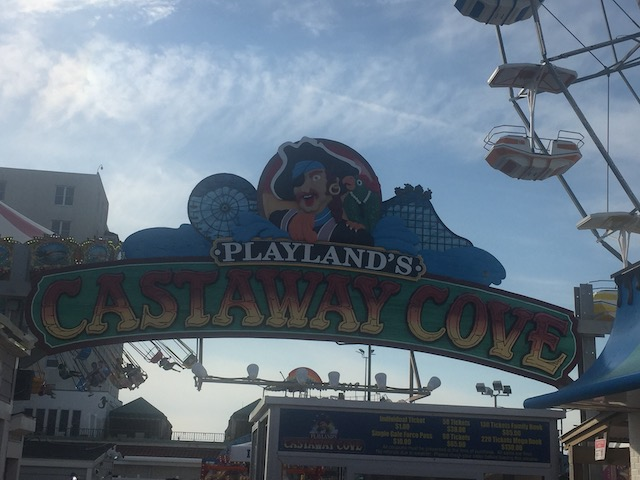
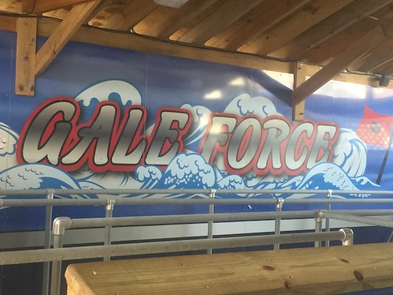
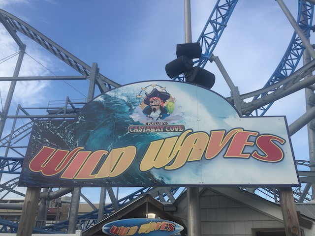
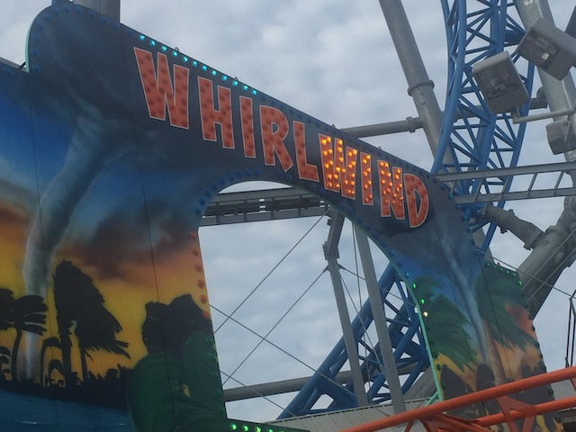
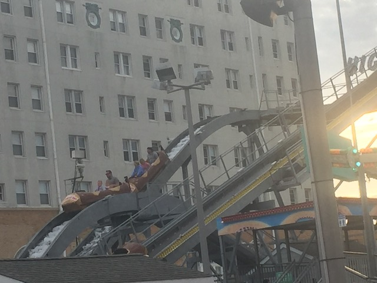
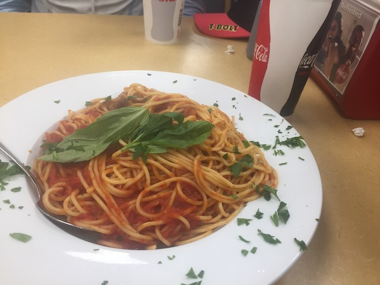
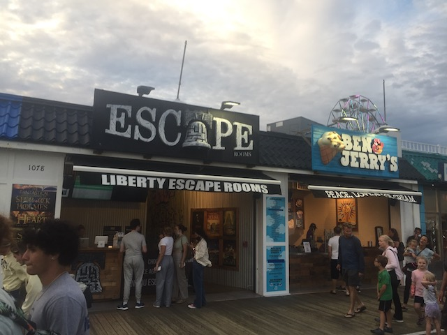

| |
Playland's Castaway Cove Review

Playland's Castaway Cove is a boardwalk park that is on the Jersey Shore. Yeah. This is another one of those Jersey Shore parks. Except in all honesty, this is unquestionably the biggest one. And the most notable one. For this one has by far, the most unique and best coaster on the Jersey Shore. Gale Force. I have a full review of it down below, but this ride is awesome, and honestly, the best coaster in New Jersey that's not at Six Flags Great Adventure. But the rest of the park has a lot, but nothing else stands out. There are 3 other roller coasters, but they're all pretty meh (Plus, two are kiddy coasters). And honestly, there just wasn't the same laid back vibe here that I felt at neighboring Casino Pier. This one definately felt bigger. But also busier, more crowded, and aside from Gale Force, more generic. It didn't have the same hang out and chill vibe I got at the other parks. Now who knows? Maybe I just hit it on an off day and it can have that same feel to it. Cause this park does have some cool stuff, including one of the most unique coasters in America. Yeah. It's not the best seaside park by any means. But I genuinely recommend checking out this place if you're a coaster enthusiast. And not just for credit whoring. Gale Force is truly worth it. And the rest of the park is pretty fun too.
Rollercoasters
There is a link to a review of all the Rollercoasters at Playland's Castaway Cove.
Top Coasters
Gale Force Review

Family Coasters
Wild Waves Review

Kiddy Coasters
Pirates Goldrush Review

Whirlwind Review

Flat Rides
Here are the reviews of all the Flat Rides at Playland's Castaway Cove. I honestly didn't ride any of the flat rides here simply because.....I was using tickets, and none of the flat rides here really stood out to me. One flat ride I didn't know about during my visit is Squadron 33. Cause if I knew this ride was there, I would've spent the money to ride it! This appears to be a paratrooper mixed with a Chance Unicoaster, and really reminds me of Wild Storm at Hamanako Pal Pal. I never thought I'd find anything like that in America. Well, I'm glad SOMETHING similar is in America. I really hope this is new and that I wasn't so stupid as to just coincidentally miss a ride like this (I really need to check the parks websites to look for unique flat rides before visiting smaller parks). Onto other rides. Next up would be the S&S Double Shot. I'm sure it's very fun. But....riding the one at Casino Pier the day before just made me not need to ride it. The other major flat rides they have here would be a Frisbee and an Air Race. Both of these are really fun rides. But neither of them are anything to write home about if you're visiting the park. But for locals, these are really fun rides and would definately be worth riding. There are also a handful of other smaller flat rides. Playland's Castaway Cove also has a Moby Dick ride, a gravitron, a tilt a whirl, a pirate ship, some chairswings, some bumper cars, a ferris wheel, a carousel, and some kiddy flats. None of that stuff seems intersting.
Dark Rides
There are no dark rides at Playland's Castaway Cove.
Water Rides
Playland's Castaway Cove does manage to have a log ride. It's not a unique, special, or interesting log flume. It is the exact same log flume that you find at your average carnival. Nothing special about it all. Well, except for one little thing. THIS THING F*CKING SOAKED ME!!! SERIOUSLY!!! If you want a special unique well themed log flume, then keep looking. Want something with big exciting drops? Move along. Want to get wet and cool off? Well, this ride will do the trick.

It may not be special, but it is WET!!!
Dining
Figuring out all the resteraunts at Playland's Castaway Cove is surprisingly a much bigger pain in the ass than I figured. The one place I ate at was called "Primavera Pizza & Pasta", which....serves pizza and pasta. Nothing special, but it was good food. And....pasta isn't a super common theme park food (even if it's far more common in my everyday life than your standard theme park foods). It wasn't anything special. I've made better stuff at home (and I DON'T consider myself to be a chef or a good cook). But I still enjoyed it. As far as what else they have? What other options do they have? I DON'T KNOW!!! I know I normally give you the other options, but for SOME REASON, the parks website doesn't give you food options. Like....What!? I know I don't usually check parks websites to survey their dining options aside from writing park reviews as research. Usually, anything truly great will be shared via word of mouth from other enthusiasts. But....I'm baffled. The most they show is a page called "Conessions" which just explains via photos that they serve Dippin Dots, Cotton Candy, Dairy Queen & Orange Julius, Coke Products, and Super Pretzals. That's it? Come the f*ck on! I'm not a web designer, but even I'm looking at that and thinking "You gotta fix your website Playland's Castaway Cove". And like I said, I'm NOT a web designer (though I apparently am better than most people since I actually run my site with Adobe Dreamweaver and actual code rather than use one of those sh*tty site-building sites like Squarespace, Wix, and Wordpress, despite them trying to force them on me).

Come on Playland's Castaway Cove. Have some confidence in your dining selection.
Theming and Other Attractions
Here are the reviews of all the other stuff at Playland's Castaway Cove. Well, for theming, there's essentially NOTHING!!! A few pirate statues is basically the exent of the themeing here. So yeah. This doesn't have anything. True, it is a seaside park and has a beachside atmosphere. So there is that. But.....as far as beach atmospheres go, this was one of the weaker ones. Maybe it was just the day I hit it, but Casino Pier definately had a better atmosphere. As far as other things to do, there's plenty. Playland's Castaway Cove has several funhouses. I know I did one of them. It was just a standard carnival funhouse. But I still enjoyed it. They also have a lot of go-karts, some mini golf courses, a huge arcade, and I know they had an Escape Room. Those are a ton of fun. So if you're there and have never checked one out, I highly recommend that. There's also the beach. That's always something to do. Regardless, there's plenty of other stuff you can do at Playland's Castaway Cove.

I seriously recommend trying one of these if you've never done an escape room before.
In Conclusion
Playland's Castaway Cove is a fun little seaside park. For the most part, the stuff is just pretty standard here. However, there are a couple exceptions. I can not stress enough how good Gale Force is. Not only that, but it's also incredibly unique. I know I have a whole review on the ride. But Gale Force alone is worth stopping by. Whether you should stick around afterwards? Depends on how much you enjoy standard carnival rides. The only other ride that seems to stand out would be the Paratrooper Unicoaster that I didn't know about during my visit. Everything else is just fairly standard. It's nothing that would be worth traveling for. Plus, the park did seem more crowded, busier, and just didn't have as much of a laid back vibe. But hey. You should already come since....Gale Force is here. And there are a couple other credits here for credit whoring. If you're not doing too much else, it would be worth it to spend an evening at Playland's Castaway Cove. The rest of the park may not be special, but you could definately have a fun time here.
Enthusiast FAQs.
*Are there kiddy coaster restrictions? - No. You can ride both Pirate's Goldrush and Whirlwind.

Tips
*DO NOT SKIP GALE FORCE!!!
*Get an unlimited ride wristband.
*Have Fun!!!!
Theme Park Category:
Piers & Boardwalks
Location
Ocean City, New Jersey, USA
Last Day Visited
June 18, 2021
Video
I didn't shoot enough video to make a Playland's Castaway Cove video.
Complete Update List
2021
East Coast Trip 2021
Here's a link to the parks website.
Home
|